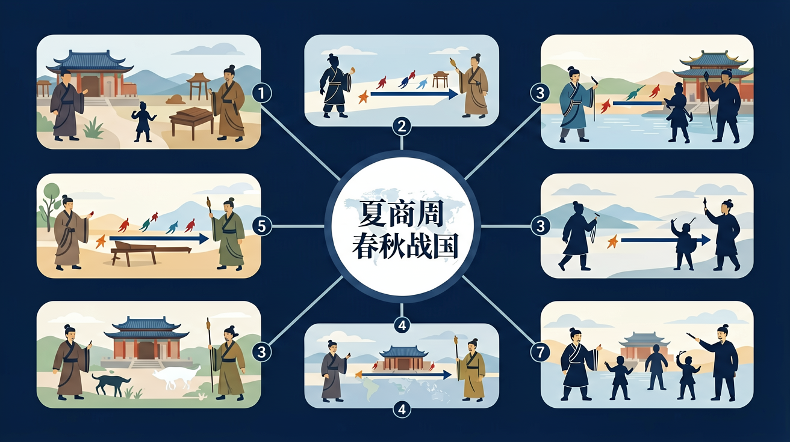

通过了解夏商周的更替，认识中华文明的早期发展特征。

🎯 能说出分封制与宗法制的核心内容
🎯 能分析春秋战国时期百家争鸣的社会根源
🎯 能判断商周青铜器的典型纹饰特征
❓ 为什么周朝能统治800年？
❓ 春秋战国为啥天天打仗？
❓ 商纣王真的像封神榜里那么坏吗？
学完这一课，这些问题你都能自信地回答。
下列哪项是分封制的核心内容？
商代甲骨文主要功能是？
先秦（夏商周·春秋战国）是高中历史的重要内容。通过了解夏商周的更替，认识中华文明的早期发展特征。
通过了解春秋战国时期的经济发展和政治变动，理解战国变法运动的必然性。
点击时代/图层按钮切换地图；悬停边界，点击城市标记查看说明。
夏商周至春秋战国，政治上由分封制、宗法制走向诸侯争霸与变法图强；经济上铁器牛耕推广；思想上百家争鸣。春秋战国的动荡促成制度创新与思想繁荣，为秦汉统一奠定基础。
分封制与宗法制维护西周秩序；春秋礼崩乐坏、战国兼并与变法（如商鞅）推动中央集权因素增长。思想史抓住儒墨道法主要主张及其时代背景。
常见误区：常见误区是把诸子思想抽离时代，或认为分封制与郡县制毫无连续性。
百家争鸣出现的主要背景是？
1. 甲骨文大数据处理：安阳殷墟博物馆与腾讯合作开发的"甲骨文全球数字焕活计划"，利用AI图像识别技术比对4,000余个甲骨文字形。其中"贞人"（占卜师）分组研究直接应用了董作宾提出的"贞人集团"理论，通过算法分析不同贞人主持的卜辞特征，2023年成功识别出7组新的贞人关系网络。
2. 青铜器成分检测助力考古：上海光源实验室对西周晋侯稣钟进行X射线荧光分析，发现其锡铅比例严格遵循《考工记》"六分其金而锡居一"的记载。这项技术不仅验证了战国手工业规范的可靠性，更在2022年湖北随州枣树林墓地青铜器检测中，发现了独特的"高铅低锡"配方，印证了《左传》记载的楚国金属资源特点。
3. 都江堰工程现代价值：2020年成都平原洪水期间，水利专家参照《华阳国志》中李冰"深淘滩低作堰"的治水原则，在紫坪铺水库调度中模拟了战国时期"鱼嘴分水"的流量控制模式，使岷江洪峰通过能力提升15%。该案例被写入2021年联合国教科文组织《世界灌溉工程遗产保护指南》。
1. 问题：周人"天命观"与商人"上帝崇拜"的本质差异是否被夸大？分析线索：比较殷墟卜辞中"帝令雨"与《尚书·康诰》"惟命不于常"的表述差异，注意观察宝鸡石鼓山西周早期墓葬出土的青铜器纹饰变化，思考"德"的概念如何通过彝器（如何尊"宅兹中国"铭文）实现物质化表达。
2. 问题：战国"百家争鸣"真是思想自由竞争吗？分析路径：统计《汉书·艺文志》记载的189家学派地域分布，对比齐稷下学宫与秦"以吏为师"的政策差异，特别注意湖北郭店楚简《老子》甲本与传世本的文本差异，思考竹简媒介特性对思想传播的制约作用。
先从二里头遗址3.6平方公里都邑的夯土基址说起，这些最早的大型宫室建筑群与青铜爵等礼器，标志着中国进入"青铜时代"国家形态。接着商朝用甲骨文留下16万片占卜记录，其中武丁时期"妇好"墓出土的755件随葬品，证实《竹书纪年》"殷道复兴"的记载并非虚言。周人克商后建立的分封制，通过宜侯夨簋铭文可见"赐土授民"的具体操作，而三门峡虢国墓地出土的"七鼎六簋"组合，则凝固了宗法等级制度。春秋时期郑国"铸刑书"引发争议，山西侯马盟书遗址出土的5,000余件朱书写誓玉片，再现了孔子"礼崩乐坏"所指的社会变革。最后战国的变革浪潮中，包山楚简记载的"仆区之法"与云梦秦律的"刑弃灰于道者"，共同勾勒出从习惯法到成文法的演进轨迹，为秦汉制度奠定基础。这条从部落联盟到中央集权的演进链条，在考古发现与文献互证中愈发清晰。
1. 错误认为夏朝是信史时代：学生常将二里头遗址直接等同于夏朝都城，实际上考古界仅确认其属于"广域王权国家"，尚未发现文字自证。这种误区的根源在于混淆了文献记载（如《史记·夏本纪》）与考古实物的对应关系。正确理解应是：二里头文化（前1750-前1500）展现了青铜礼器、宫城等文明要素，但"夏"的定名仍需更多证据，目前属于"疑似夏文化"范畴。
2. 混淆分封制与宗法制：许多学生将周代"天子-诸侯-卿大夫"的层级简单理解为行政划分，忽略了"嫡长子继承制"的血缘纽带作用。典型错误如认为诸侯国完全独立，实则晋国六卿、鲁国三桓的崛起都受宗法约束。认知根源在于用现代行政区划概念理解古代政治，正确视角应是：分封制（政治权力分配）与宗法制（血缘等级制度）互为表里，通过"同姓不婚""昭穆制度"等具体规则维系。
3. 高估战国变法彻底性：常将商鞅"废井田"理解为土地私有制全面建立，实则《睡虎地秦简》显示国家仍控制"授田"。这种误解源于把改革纲领等同于实施效果，实际进程更复杂：比如《商君书》记载的"军功授爵"，考古发现秦墓兵器铭文证实存在"公士""上造"等爵位，但湖北云梦郑家湖墓地出土文书显示，旧贵族仍保有部分特权至秦统一前。
复制提示词到 AI 学伴，生成「先秦（夏商周」的时间轴或事件提纲；也可以上传你手绘的示意图，请 AI 学伴点评。
复制后可粘贴到 AI 学伴继续对话。
关于甲骨文和金文，正确的是？
对比西周分封诸侯地图与青铜器铭文记载
关于先秦（夏商周·春秋战国）的学习，哪种做法最科学？
选一个并查看反馈。
先独立作答，再点选项查看对错与错因。
商代青铜器铭文最可能记载的内容是？
战国时期青铜器功能发生的主要变化是？
下列哪项最能体现西周分封制特点？
商周时期将文字铸刻在青铜器上的文字称为____
答案：金文
区别于甲骨文的刻写方式
春秋战国时期____学派主张"克己复礼"
答案：儒家
孔子核心思想之一
✅ 韩赵魏为三家分晋自立，非周王室分封
💡 混淆分封制与新兴地主阶级夺权
✅ 指出甲骨文载体（龟甲兽骨）的宗教属性
💡 脱离商代‘率民以事神’的社会特点
口诀：夏商西周奴隶制，春秋战国封建起
类比：分封制像加盟店，周天子是总店老板
（高考真题）《左传》载‘国之大事，在祀与戎’，反映先秦时期？
（迁移题）现代企业‘总部-分公司’管理模式最类似先秦哪种制度？
（概念辨析）春秋战国时期‘礼乐征伐自诸侯出’反映的本质是？
点击节点跳转到对应章节；可切换布局。